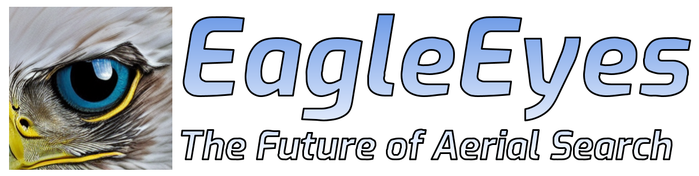

My name is Peter O'Connor and I am the summer intern, lead developer, and CEO at EagleEyes. Before started work on EagleEyes in June 2022, I worked in mobile robotics at Brain Corporation in San Diego, did a PhD in machine learning from University of Amsterdam, a Master's in neural systems and computation at ETH Zurich, and my Bachelor's in electrical engineering at McGill University in Montreal. I am currently based in Squamish, British Columbia.
As you can see, EagleEyes is currently a one man show. Given the right people and investment, it could become much more than that. The technology behind EagleEyes has the potential transform Search and Rescue, and it does not need to stop there. Agricuture, resource management, surveying, wildfire monitoring - the sky is the limit.
If you are interested in what is going on at EagleEyes, whether to collaborate, invest, or simply keep up to date, please contact us (me) at:
{% include footer.html %}
